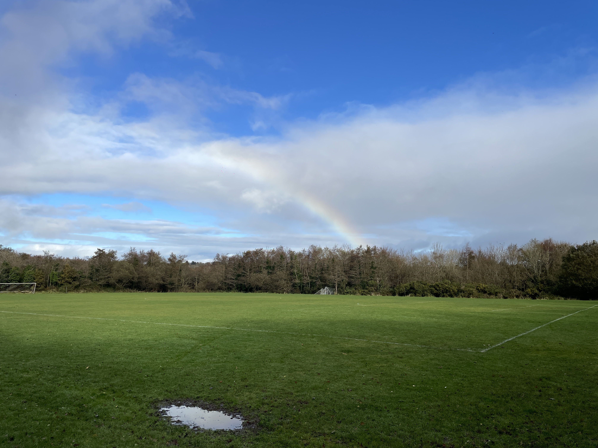
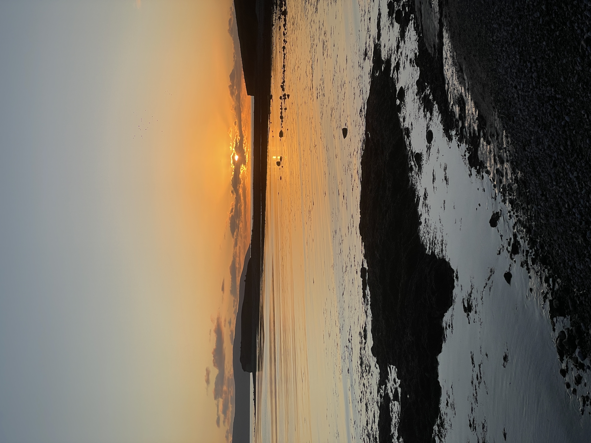
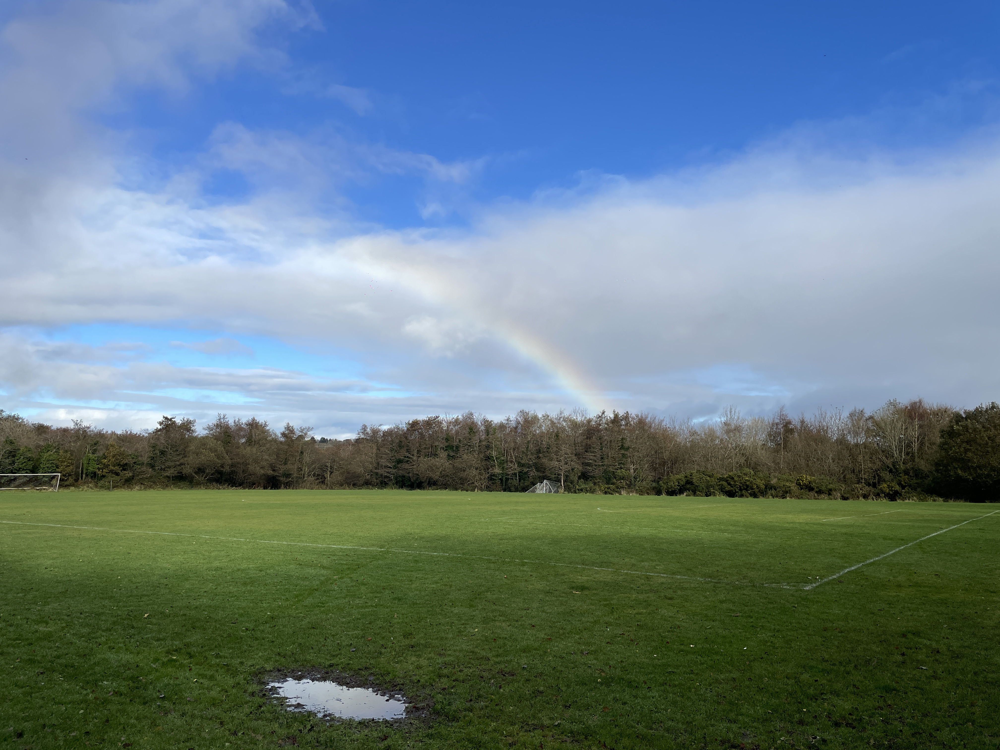
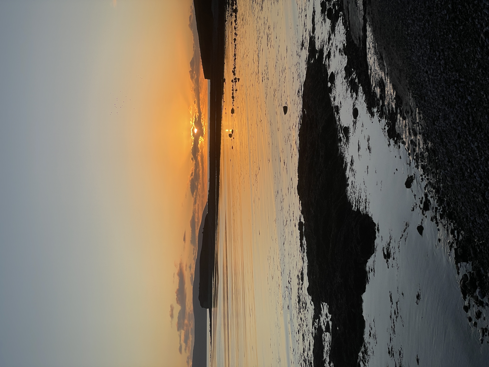

[Houdini] Stylized Tree Generator
"使用Houdini制作风格化树" 主要讲解了使用Houdini制作风格化树的过程...
Light and Color
深入探讨光影的表现及使用技巧...
This is the test of article
HAHAHAHAHAHAHAHAHAHHHHH and meow meow meow mewo meow meow meow meow meow meow ...
This is the test of article too
HAHAHAHAHAHAHAHAHAHHHHH and meow meow meow mewo meow meow meow meow meow meow ...
This is the test of article three
HAHAHAHAHAHAHAHAHAHHHHH and meow meow meow mewo meow meow meow meow meow meow ...


 


